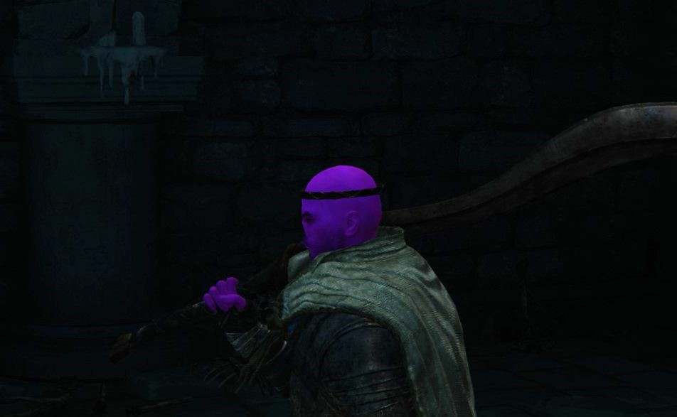
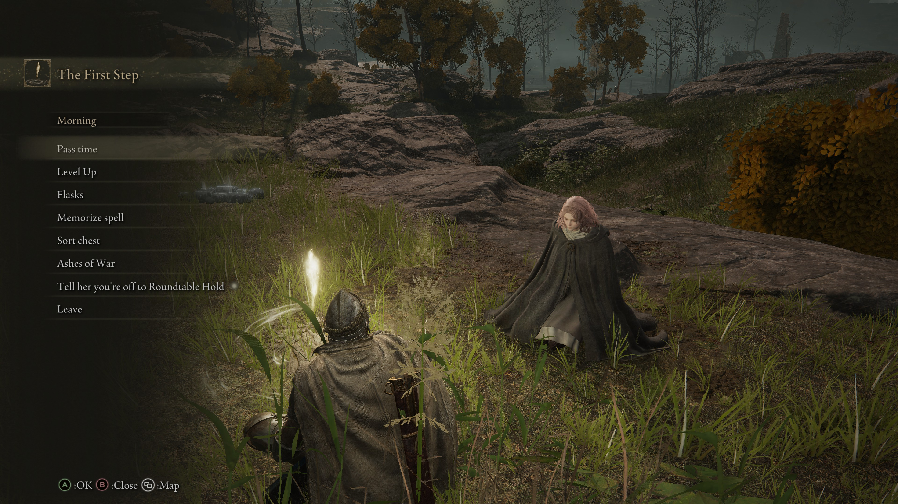
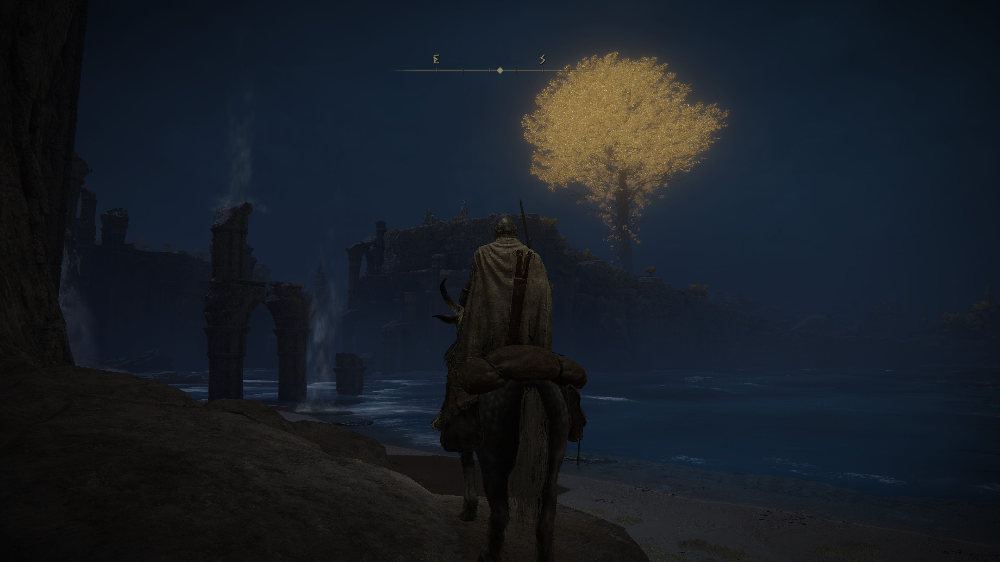

A souls-like game made by the big men who made Dark Souls. Though easier than Dark Souls, it's still a fun challenge at times. Am a big fan of the character customization as I could really distort the face. Also looks really good while also running good on a computer that isn't top tier.
Elden Ring
My Summary

Why I like this game

I personally am a big fan of difficult games. Not difficult in that there is pvp and everybody who plays has no life and I get destroyed, but through actually being a difficult game at times, whether it be mechanics or hard enemies.
Steam Summary

- A Breathtaking World Full of Excitement and Mystery The Lands Between are part of a vast continent where magnificent open fields and huge dungeons with complex and three-dimensional designs are seamlessly connected. As you explore, the joy of discovering unknown and overwhelming threats awaits you. Mastery of the terrain and knowledge of its secrets can help you overcome enemies and defeat formidable bosses or lead invading players into traps.
- Defeat Challenging Foes in Intense Combat Combat in ELDEN RING is simple to learn yet offers hidden depths of mastery. As you seek to become the Elden Lord, you’ll need to explore the balance between attacking and avoiding damage, use a wide variety of weapons, spells, & summons, and perfect your timing to take advantage of your opponents’ weaknesses.
- Create and Build Your Own Character In addition to customizing the appearance of your character, there are countless ways to combine the weapons, armor, usable items, and magic that you equip. You can develop your character according to your play style. No matter if you prefer bold physical confrontation, tactical spellcasting, or the subtle art of stealth, you’ll be able to find gear that supports your choices.
- An Epic Drama Born from a Myth Created by George R.R. Martin The founding mythology of Elden Ring was written by George R. R. Martin and adapted into a rich multilayered story. Intersecting goals and desires between the characters create an intense narrative that weaves throughout the Lands Between. The events of the game can unravel in many ways, depending on your interventions.
- Play Alongside a Massive Worldwide Community The Tarnished community is massive and active. Your friends may already be among them. You can play with up to two other Tarnished as your cooperative teammates, either by inviting them using a shared password or by summoning them from a pool of nearby community members. There are also ample opportunities to face off against other players, either through co-op invasions, invited duels, or the many player battle options available in the three Colosseums.